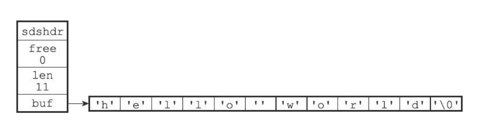
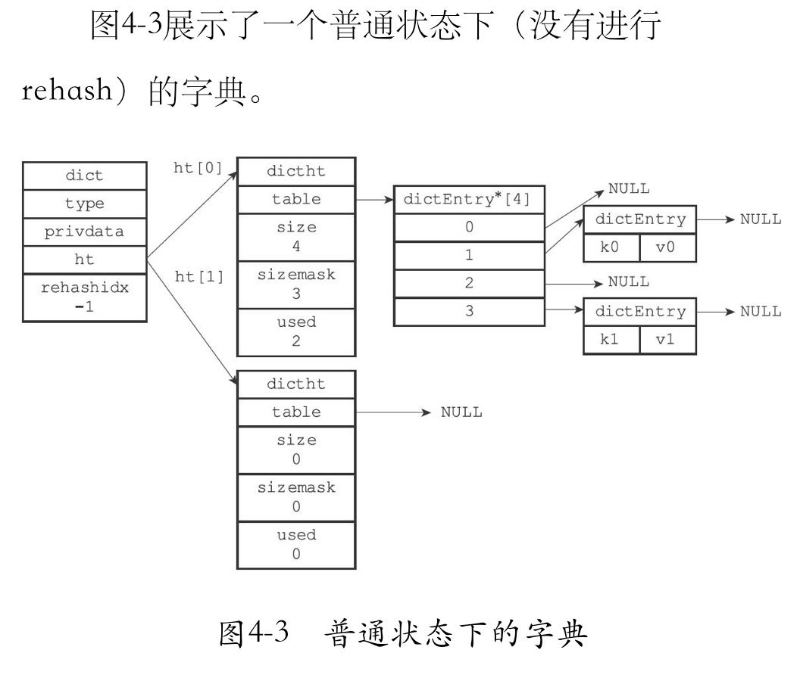
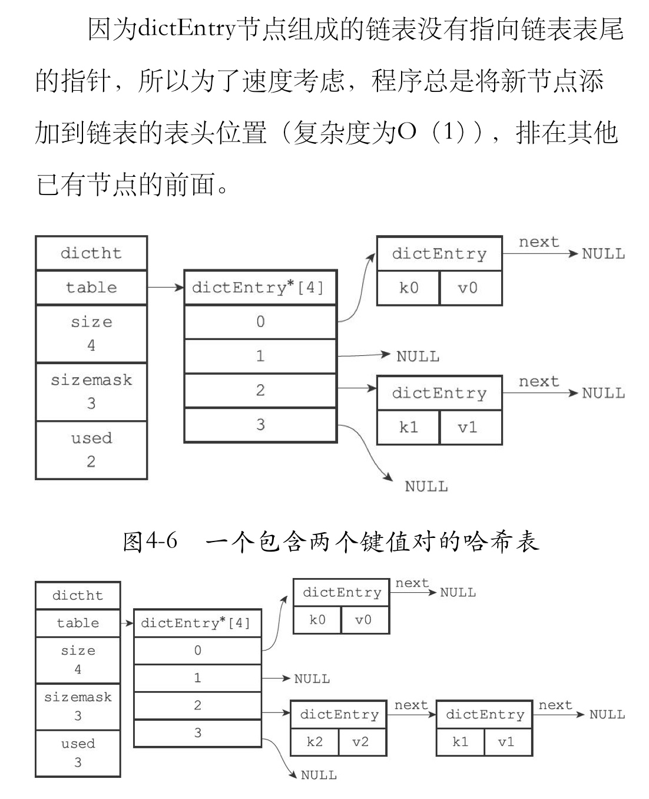
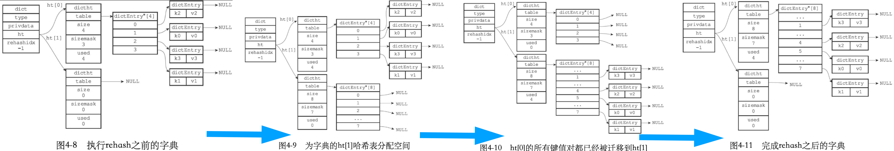
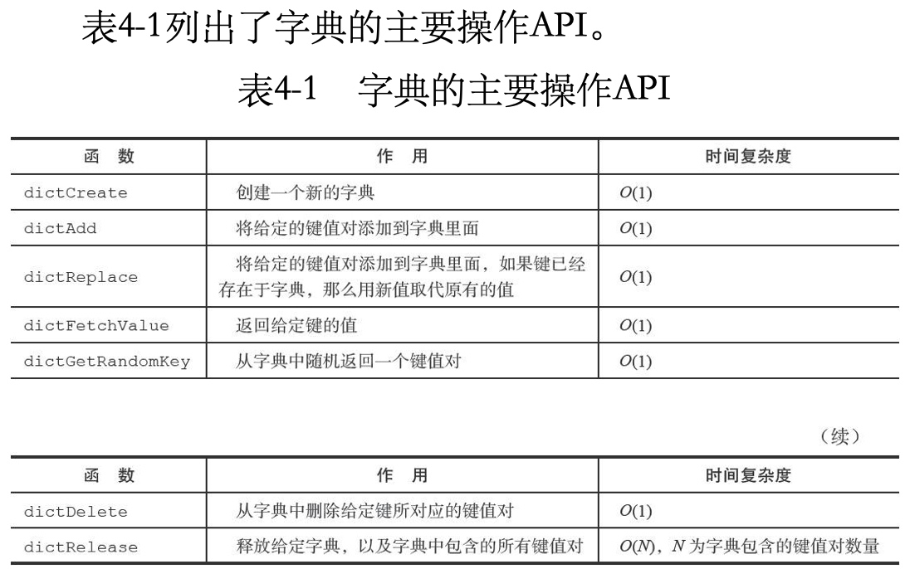
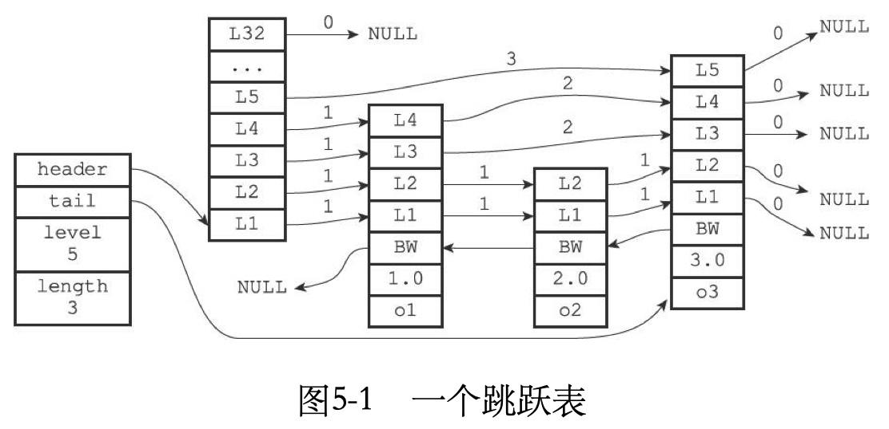
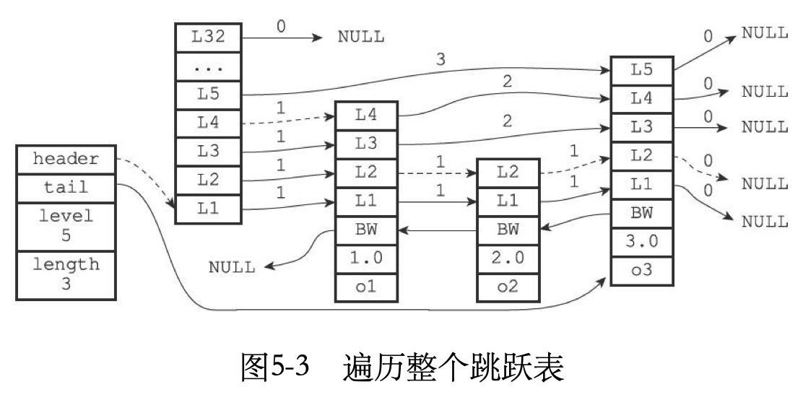
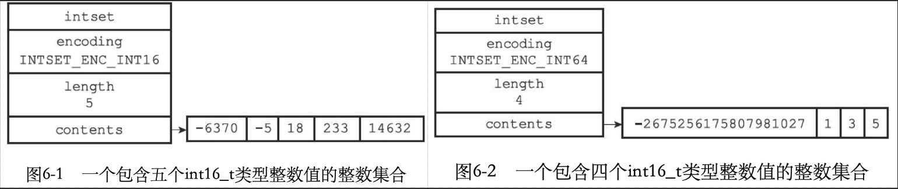
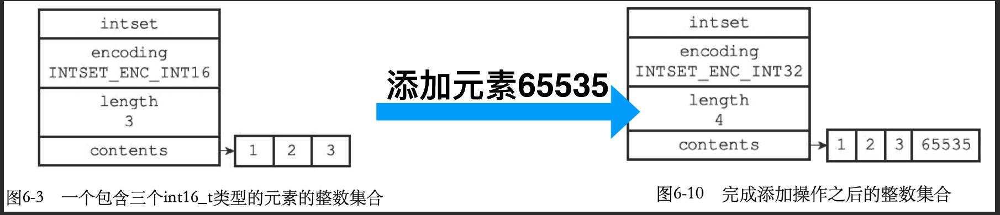

redis底层数据结构
摘自 《Redis设计与实现》
使用的redis源码是 redis3.0
- 简单动态字符串 SDS --> String
- 链表 adlist --> 列表健、发布与订阅、慢查询、监视器、用链表保存多个客户端状态信息、用链表构建客户端输出缓冲区
- 字典 dict --> redis的数据库底层实现、 哈希键的底层实现之一
- 跳跃表 skiplist -> 有序集合键(zset)、集群节点的内部数据结构
- 整数集合intset --> 集合键的底层实现之一
- 压缩列表ziplist -> 列表键、哈希键的底层实现之一
- 对象
简单动态字符串 SDS --> String
简单动态字符串(simple dynamic string SDS)
数据结构
// sds.h/sdshdr
struct sdshdr {
int len; // buf 数组中已使用字节的数量 = sds所保存字符串的长度
int free; // buf 数组中未使用字节的数量
char buf[]; // 字节数组，用于保存字符串(二进制存储)
// buf里面存储数据时，会与C类似，自动在最后添加'\0'作为结束
// 但是sds有len字段存储字符长度，故字符串中间可以有空格(与C区别)
};

用途
- 保存数据库中的字符串值
- AOF模块中的AOF缓冲区
- 客户端状态中的输入缓冲区
与 C语言字符串比较
- O(1)复杂度获取字符串长度
- 杜绝缓冲区溢出(sds通过未使用空间解除字符串长度和底层数组长度的关联. buf len free)
- 减少修改字符串长度时所需的内存重分配次数(空间预分配 扩容是 len=扩容后字符串长度 free=len， 总长度=len+free+1)
- 二进制安全
- 兼容部分C字符串函数
sds 与 c语言字符串 都是以 \0 结尾， 所以 SDS可以直接重用一部分C字符串函数库中的函数
c字符串底层实现是一个N+1个字符长的数组（额外的一个自负空间用于保存\0）因为C字符串的长度和底层数组的长度之间存在这种关联性，所以每次增长或缩短一个C字符，程序总要对保存这个C字符的数据进行一次黁从重分配操作：
1. 增长字符串操作(append)，在执行这个操作之前，程序需要先通过内存重分配来扩展底层数据的空间大小，如果忘了这一步就会产生 **缓冲区溢出**
2. 缩短字符串操作(trim)，在执行这个操作之后，程序需要通过内存重分配来是否字符串不再使用的那部分空间，如果忘了这一步就会产生 **内存泄露**
为了避免C字符串的这种缺陷，SDS通过未使用空间接触字符串长度和底层数组长度的关联：在SDS中，buf数组长度不一定就是字符数量+1，数组里面可以包含未使用的字节，而这些字节的数量就由 SDS 的 free 属性记录。
通过未使用空间，SDS实现空间预分配和惰性空间释放两种优化策略
空间预分配
字符串增长操作时，程序不仅会为SDS分配修改所必须要的空间，还会为SDS分配额外的未使用空间
额外分配的未使用空间数量计算公式：- 如果SDS进行修改之后，SDS的长度(len)小于1MB，那么程序分配和len属性同样大小的未使用空间，这是 SDS的len和free的值相同。(eg:修改后 sds 的len变成13字节，那么程序会分配13字节的未使用空间free， buf数组实际长度 变成 13+13+1 = 27 字节)
- 如果SDS进行修改之后，SDS的长度(len)大于等于1MB，那么程序会分配1MB的未使用空间。(eg:修改后 SDS 的len编程30MB，那么程序会分配1MB的未使用空间free，buf数组的实际长度 编程 30MB+1MB+1byte)
通过空间预分配策略，Redis可以减少连续执行字符串增长操作所需的内存重分配次数，SDS将连续增长N此字符串所需的内存重分配次数从必定N次降低为最多N次。
惰性空间释放
字符串缩短操作时，程序并不立即使用内存重分配来回收缩短后多出来的字节，而是使用free属性将这些字节的数量记录下来，并等待将来使用
通过惰性空间释放策略，SDS避免了缩短字符串时所需的内存重分配操作，并未将来可能有点增长操作提供了优化C字符串中的字符必须符合某种编码(如ASCII)，并且出字符串末尾外，字符串里不能包含空字符(
\0)；SDS的api都是二进制安全的，所有SDS的api都会以处理二进制的方式来处理SDS存放在buf数组中的数据，程序不会对其中的数据做任何限制，数据在写入时是什么样的，它被读取时就是什么样的
SDS API

链表 adlist --> 列表健、发布与订阅、慢查询、监视器、用链表保存多个客户端状态信息、用链表构建客户端输出缓冲区
数据结构
// adlist.h/listNode
typedef struct listNode {
struct listNode * prev; // 前置节点
struct listNode * next; // 后置节点
void * value; // 节点的值 类型为指针，可以存储任意值
} listNode;
// adlist.h/list
typedef struct list {
listNode * head; // 表头节点
listNode * tail; // 表尾节点
unsigned long len; // 链表所包含的节点数量
void *(*dup)(void *ptr); // 节点值复制函数，用于复制链表节点所保存的值
void (*free)(void *ptr); // 节点值释放函数，用于释放链表节点所保存的值
int (*match)(void *ptr, void *key); // 节点值对比函数，用于对比链表节点所保存的值和另一个输入值是否相等
} list;

用途
链表被应用于 列表键、发布与订阅、慢查询、监视器
链表特性
- 双端: 链表节点带有prev和next指针，获取节点的前置节点和后置节点的复杂度都为O(1)
- 无环: 表头结点的prev指针和表尾节点的next指针都指向null，对链表的访问以null为终点
- 带表头指针和表尾指针: 通过list结构的head指针和tail指针，程序获取链表的表头节点和表尾节点的复杂度为O(1)
- 带链表长度计数器: 通过list结构的len属性来对len持有的链表节点进行计数，程序获取链表中节点数量的复杂度为O(1)
- 多态: 链表节点使用void*指针来保存节点值，并且可以通过list结构的dup、free、match三个属性为节点值设置类型特定函数，故链表可以用于保存各种不同的数据类型
链表 链表节点 API


字典 dict --> redis的数据库底层实现、 哈希键的底层实现之一
字典，又称为符号表(symbol table)、关联数组(associative array)或映射(map)，是一种用于保存键值对(key-value pair) 的抽象数据结构
数据结构
// dict.h/dictht 哈希表 每个字典都使用两个哈希表，从而实现渐进式 rehash 。
typedef struct dictht {
dictEntry **table; // 哈希表数组
unsigned long size; // 哈希表大小
unsigned long sizemask; // 哈希表大小掩码，用于计算索引值 sizemask=size-1
unsigned long used; // 该哈希表已有节点的数量
} dictht;
// dict.h/dictEntry 哈希表节点
typedef struct dictEntry {
void *key; // 键
union {
void *val; // redis大量用指针指向内存地址，这样就可以存储任意类型的数据
uint64_t u64;
int64_t s64;
} v; // 值 可以是指针 或 unit64_t整数 或 int64_t整数
struct dictEntry *next; // 指向下个哈希表节点，形成链表，hash冲突时用，链地址法
} dictEntry;
// dict.h/dict 字典
typedef struct dict {
dictType *type; // 类型特定函数
void *privdata; // 私有数据 type和privdata是针对不同类型的键值对，为创建多态字典而设置
dictht ht[2]; // 哈希表 ht[0]存储数据， ht[1]扩容时使用
int rehashidx; // rehash时，值为h[0]已复制节点的索引，每复制完当前ht[0][rehashidx]的数据，rehashidx变自增1,当 rehash 不在进行时，值为 -1
int iterators; // 目前正在运行的安全迭代器的数量
} dict;
// dict.h/dictType 字典类型特定函数
typedef struct dictType {
unsigned int (*hashFunction)(const void *key); // 计算哈希值的函数 默认使用Murmurhash2算法
void *(*keyDup)(void *privdata, const void *key); // 复制键的函数
void *(*valDup)(void *privdata, const void *obj); // 复制值的函数
int (*keyCompare)(void *privdata, const void *key1, const void *key2); // 对比键的函数
void (*keyDestructor)(void *privdata, void *key); // 销毁键的函数
void (*valDestructor)(void *privdata, void *obj); // 销毁值的函数
} dictType;

哈希算法
当要将一个新的键值对添加到字典里面时，程序需要先根据键值对的键计算出哈希值和索引值，然后在根据索引值，将包含新键值对的哈希表节点放到哈希表数组的指定索引上面
#使用字典设置的哈希函数，计算键key的哈希值
hash = dict->type->hashFunction(key);
#使用哈希表的sizemask属性和哈希值，计算出索引值，根据情况不同，ht[x] 可以是ht[0]，或者ht[1]
index = hash & dict->ht[x].sizemask;
当字典被用作数据库的底层实现，或者哈希键的底层实现时，Redis使用 MurmurHash2 算法来计算键的 哈希值
哈希冲突 链地址法
当有两个或以上数量的键被分配到了哈希表数组的同一个索引上时，我们称这些键发生了冲突(collision)
Redis的哈希表使用链地址法(separate chaining)来解决键冲突，每个哈希表节点都有一个next指针，多个哈希表节点可以用next指针构成一个单向链表，被分配到同一个索引上的多个节点可以用这个单线链表连接起来，这就解决了键冲突的问题

rehash过程
rehash过程
为字典ht[1]hash表分配存储空间(该大小取决于要执行的扩容还是收缩，也取决于ht[0]当前包含的键值对)
- 扩容: ht[1]的大小为第一个 >= ht[0].used*2的2n (2的n次方幂)
- 收缩: ht[1]的大小为第一个 >= ht[0].used的2n
将ht[0]中所有的键值对rehash到ht[1]上(rehash是指重新计算健的哈希值和索引值，然后将键值对放到ht[1]的指定位置)
当ht[0]包含的键值对都迁移到ht[1]后(ht[0]变成空表)，释放ht[0],将ht[1]设置为ht[0],并在ht[1]新建一个空白哈希表，为下一次rehash做准备
rehash过程图例

rehash时机
当一下条件中的任意一个被满足，会触发rehash
- 扩展: 服务器目前没有在执行
bgsave命令或者bgrewriteaof命令，并且哈希表的负载因子大于等于1，程序会自动对哈希表进行扩展操作 - 扩展: 服务器目前正在执行
bgsave命令或者bgrewriteaof命令，并且哈希表的负载因子大于等于5，程序会自动对哈希表进行扩展操作 - 收缩: 当哈希表的负载因子小于0.1时，程序自动对哈希表执行收缩操作
负载因子=哈希表已保存节点数量/哈希表大小
load_factor=ht[0].used/ht[0].size
因为在执行bgsave或bgrewriteaof命令的过程中，redis需要创建当前服务器进程的子进程，而大多数系统都采用写时复制(copy-on-write)技术来优化子进程的使用效率，所以在子进程存在期间，服务器会提高执行扩展操作所需的负载因子
渐进式hash
rehash的详细步骤:
- 为ht[1]分配空间，让字典同时持有ht[0]和ht[1]两个hash表
- 在字典中维持一个索引计数器变量rehashidx，并将它的值设置为0，表示rehash正式开始
- 在rehash进行期间，每次对字典执行添加、删除、查找或则更新操作时，程序处理执行指定的操作以外，还会顺带将ht[0]哈希表在rehashidx索引上的所有键值对rehash到ht[1]，当rehash工作完成之后，程序将rehashidx属性的值自增1
- 随着字典操作的不断进行，最终在某个时间点上，ht[0]的所有键值对都会被rehash至ht[1]，这时程序将rehashidx属性的值设为-1，表示rehash操作已完成
采用分而治之的方式，将rehash键值对所需要的计算工作均摊到字典的每个添加、删除、查找和更新操作上，从而避免集中式rehash而带来的庞大计算量
rehash详细过程图例

字典 API

跳跃表 skiplist -> 有序集合键(zset)、集群节点的内部数据结构
数据结构
// redis.h/zskiplistNode
typedef struct zskiplistNode {
struct zskiplistLevel{
struct zskiplistNode *forward; // 前进指针
unsigned int span; // 跨度(记录两个节点之间的距离，用来计算排位:在查找某个节点的过程中，将沿途访问过的所有层的跨度累积起来，得到的结果就是目标节点在跳跃表中的排位)
} level[]; // 层
struct zskiplistNode *backword; // 后退指针
double score; // 分值
robj *obj; // 成员对象
} zskiplistNode;
// redis.h/zskiplist
typedef struct zskiplist {
struct zskiplistNode *header, *tail; // 表头节点和表尾节点
unsigned long length; // 表中节点数量(跳跃表的长度，表头节点不计算在内)
int level; // 表中层数最大的节点的层数
} zskiplist;

遍历整个跳跃表

(如上图:跳跃表中节点排列是按照score从小到大排列， 如果score一样，则按照obj(o1,o2,o3)对象在字典序中的大小 从小到大排列)
- 迭代程序首先访问跳跃表的第一个节点(表头节点)，然后从第四层的前进指针移动到表中的第二个节点
- 在第二个节点时，程序沿着第二层的前进指针移动到表中的第三个节点
- 在第三个节点时，程序沿着第二层的前进指针移动到表中的第四个节点
- 当程序再次沿着第四个节点的前进指针移动时，他碰到一个null，程序知道这时已经达到了跳跃表的表尾，结束这次遍历
跳跃表API
| 函数 | 作用 | 时间复杂度 |
|---|---|---|
| zslCreate | 创建一个新的跳跃表 | O(1) |
| zslFree | 释放给定跳跃表，以及表中包含的所有节点 | O(N), N为跳跃表长度 |
| zslInsert | 将包含给定成员和分值的新节点添加到跳跃表中 | 平均O(logN),最坏O(N), N为跳跃表长度 |
| zslDelete | 删除跳跃表中包含给定成员和分值的节点 | 平均O(logN),最坏O(N), N为跳跃表长度 |
| zslGetRank | 返回包含给定成员和分值的节点在跳跃表中的排位 | 平均O(logN),最坏O(N), N为跳跃表长度 |
| zslGetElementByRank | 返回跳跃表在给定排位的节点 | 平均O(logN),最坏O(N), N为跳跃表长度 |
| zslIsInRange | 给定一个分值范围(range),比如0到15，20到28，如果跳跃表中至少一个节点的分值在这个范围之内，那么返回1，否则返回0 | 通过跳跃表的表头结点和表尾节点，这个检测可以用O(1)复杂度完成 |
| zslFirstInRange | 给定一个分值范围，返回跳跃表中第一个符合这个范围的节点 | 平均O(logN),最坏O(N), N为跳跃表长度 |
| zslLastInRange | 给定一个分值范围，返回跳跃表中最后一个符合这个范围的节点 | 平均O(logN),最坏O(N), N为跳跃表长度 |
| zslDeleteRangeByScore | 给定一个分值范围，删除跳跃表中所有在这个范围之内的节点 | O(N), N为被删除节点数量 |
| zslDeleteRangeByRank | 给定一个排位范围，删除跳跃表中所有在这个范围之内的节点 | O(N), N为被删除节点数量 |
整数集合intset --> 集合键的底层实现之一
数据结构
// intset.h/intset
typedef struct intset {
unit32_t encoding; // 编码方式
// INTSET_ENC_INT16 则contents数组每一项是int16_t类型的整数值 范围[-32768,32767]
// INTSET_ENC_INT32 则contents数组每一项是int32_t类型的整数值 范围[-2147483648,2147483647]
// INTSET_ENC_INT64 则contents数组每一项是int64_t类型的整数值 范围[-9223372036854775808,9223372036854775807]
unit32_t length; // 集合包含的元素数量
int8_t contents[]; // 保存元素的数组 (虽然定义为int8_t，但数组的真正类型取决于 encoding 属性)
} intset;

升级
当我们要将一个新元素添加到整数集合里面，并且新元素的类型比整数集合现有所有元素的类型都要长时，整数集合需要先进行升级，然后才能将新元素添加到整数集合里
注: 整数集合不支持降级操作，一旦对数组进行了升级，编码就会一直保持升级后的状态
升级优点:
- 提升灵活性: 可以随意将int16_t,int32_t,int64_t类型的整数添加到集合中，程序会自动升级底层数组来适应新元素
- 节约内存: 整数集合既可以让集合同事保存3中不同类型的值，又可以确保升级操作只会在需要的时候进行， 尽量节省内存
升级步骤:
- 根据新元素的类型，扩展整数集合底层数组的空间大小，并为新元素分配空间
- 将底层数组现有的所有元素转换成与新元素相同的类型，并将转换后的元素放到正确的位置上，并且在防止元素的过程中，需要维持底层数组的有序性质不变
- 将新元素添加到底层数组里面
升级变化图解

在一个INTSET_ENC_INT16编码的整数集合，content集合中包含3个int16_t类型的元素，每个元素占用16位，故contents数组大小3*16=48
| 位 | 0至15位 | 16至31位 | 32至47位 |
|---|---|---|---|
| 元素 | 1 | 2 | 3 |
现 添加一个int32_t类型的整数值 65535
现根据新类型的长度(int32_t 是32位空间)，以及集合元素的数量，对底层数据进行空间分配 = 32*4 = 128
| 位 | 0至15位 | 16至31位 | 32至47位 | 48至127位 |
|---|---|---|---|---|
| 元素 | 1 | 2 | 3 | (新分配空间) |
元素3在1、2、3、65535中排名第三，将其类型从int16_t转成int32_t,并移动到contents数组的索引2位置上
位 0至15位 16至31位 32至47位 48至63位 64至95位 48至63位 元素 1 2 3(新分配空间) 3 (新分配空间) 元素2在1、2、3、65535中排名第二，将其类型从int16_t转成int32_t,并移动到contents数组的索引1位置上
位 0至15位 16至31位 32至63位 64至95位 48至63位 元素 1 22 3 (新分配空间) 元素1在1、2、3、65535中排名第一，将其类型从int16_t转成int32_t,并移动到contents数组的索引0位置上
位 0至31位 32至63位 64至95位 48至63位 元素 1 2 3 (新分配空间) 元素65535在1、2、3、65535中排名第四，将其类型从int16_t转成int32_t,并移动到contents数组的索引3位置上
位 0至31位 32至63位 64至95位 48至63位 元素 1 2 3 65535 程序将整数集合的encoding从INTSET_ENC_INT16 -> INTSET_ENC_INT32, 并将length属性从3改4，最终效果如上图变化
整数集合API
| 函数 | 作用 | 时间复杂度 |
|---|---|---|
| intsetNew | 创建一个新的整数集合 | O(1) |
| intsetAdd | 将给定元素添加到集合里面 | O(N) |
| intsetRemove | 从集合中移除给定元素 | O(N) |
| intsetFind | 检查给定值是否存在于集合 | O(logN) 数组有序 二分查找 |
| intsetRandom | 从集合中随即返回一个元素 | O(1) |
| intsetGet | 取出底层数组在给定索引上的元素 | O(1) |
| intsetLen | 返回集合包含的元素个数 | O(1) |
| intsetBlobLen | 返回集合占用的内存字节数 | O(1) |
压缩列表ziplist -> 列表键、哈希键的底层实现之一
当一个列表建质保函少量列表值，且每个列表项要么是小整数值，要么是长度较短的字符串， 则redis会用ziplist作为列表键的底层实现
当一个哈希键只包含少量键值对，并且每个键值对的键和值要么是小整数，要不是长度较短的字符串，那么redis会用压缩列表作为哈希键的底层数实现
ziplist是redis为节约内存而开发的，是由一系列特殊编码的连续内存块组成的顺序型数据结构
一个ziplist可以包含任意多个节点(entry),每个节点可以保存一个字节数组或一个整数值
压缩列表例子(各个组成部分):
| zlbytes | zltail | zllen | entry1 | entry2 | … | entryN | zlend |
|---|
每个压缩列表结点entry 可以保存字节数组或则一个整数
entry节点结构如下
| previous_entry_length | encoding | content |
|---|---|---|
| 记录压缩列表中见一个节点的长度，该属性长度为1字节(前一个节点长度小于254字节)或5字节(前一节点长度大于等于254字节)(由于与前一节点相关，故插入或删除节点可能会引起后续节点的连锁更新) | 记录节点content属性所保存数据的类型和长度。 1字节或2字节或5字节 | 记录节点的值(字节数组整数) |
content字节数组长度有3种:
1. <=63(2^6 -1)字节
2. <=16383(2^14 -1)字节
3. <=4294967295(2^32 -1)字节
整数长度有6中:
1. 4位长，介于0至12的无符号整数
2. 1字节的有符号整数
3. 3字节的有符号整数
4. int16_t类型整数
5. int32_t类型整数
6. int64_t类型整数
压缩列表各个组成部分的详细说明
| 属性 | 类型 | 长度 | 用途 |
|---|---|---|---|
| zlbytes | uint32_t | 4字节 | 记录整个列表占用的内存字节数: 在对列表进行内存重分配或计算zlend的位置时使用 |
| zltail | uint32_t | 4字节 | 记录列表表尾节点距离列表的起始地址有多少字节: 通过这个偏移量，程序无需遍历整个列表就可以确定表尾节点的地址 |
| zllen | unit16_t | 2字节 | 记录列表包含的节点数量: 当这个属性值小于UNIT16_MAX(65535)时这个属性值就是列表包含节点数量；当这个值等于UNIT16_MAX是，节点的真实数量需要遍历列表才能计算得到 |
| entryX | 列表节点 | 不定 | 节点的长度由节点保存的内容决定 |
| zlend | unit8_t | 1字节 | 特殊值0xFE(十进制255),用于标记列表的末端 |
连锁更新
由于压缩列表中节点 previous_entry_length 的长度(1字节或5字节)是与前一个节点相关的，故新增节点或删除节点时候，后引起后续节点的连锁更新

连锁更新时间复杂度
连锁更新在最坏情况下需要对压缩列表执行N次空间重分配，而每次空间重分配的最坏复杂度为O(N)
故连锁更新的最坏复杂度为O(N2)
尽管复杂度高，但它真正造成性能问题的几率很低 原因:
- 压缩列表里桥好友多个连续的、长度介于250至253字节质检的节点，连锁更新才有可能被引发，实际中并不多见
- 即使出现连锁更新，但只要被更新的节点数量不多，就不会对性能造成任何影响。比如对三五个节点进行连锁更新是不会影响性能
所以ziplistPush等命令的平均复杂度仅为 O(N)
压缩列表API
| 函数 | 作用 | 算法复杂度 |
|---|---|---|
| ziplistNew | 创建一个新的压缩列表 | O(1) |
| ziplistPush | 创建一个包含给定值的新节点，并将这个新节点添加到列表的表头或表尾 | 平均O(N),最坏O(N2) |
| ziplistInsert | 将包含给定的新节点插入到给定节点之后 | 平均O(N),最坏O(N2) |
| ziplistIndex | 返回压缩列表给定索引上的节点 | O(N) |
| ziplistFind | 在压缩列表中查找并返回包含了给定值的节点 | 检查节点值和给定值是否相同的福再度是O(N),查找整个列表的复杂度为O(N2) |
| ziplistNext | 返回给定节点的下一个节点 | O(1) |
| ziplistPrev | 返回给定节点的前一个节点 | O(1) |
| ziplistGet | 获取给定节点所保存的值 | O(1) |
| ziplistDelete | 从列表中删除给定的节点 | 平均O(N),最坏O(N2) |
| ziplistDeleteRange | 删除压缩列表在给定索引上的连续多个节点 | 平均O(N),最坏O(N2) |
| ziplistBloblen | 返回列表目前占用的内存字节数 | O(1) |
| ziplistLen | 返回列表目前包含的节点数量 | 及诶单数量小于65535时为O(1),大于65535时为O(N) |
对象
redis 的数据结构:
1. 简单动态字符串(simple dynamic string SDS)
2. 双端链表(list)
3. 字典(dict)
4. 跳跃表(skiplist)
5. 整数集合(intset)
6. 压缩列表(ziplist)
redis的对象类型:
1. 字符串对象 String
2. 列表对象 list
3. 哈希对象 hash
4. 集合对象 set
5. 有序集合对象 zset
redis基于这6种数据结构创建了一个对象系统，这个对象系统包含5种类型的对象，每种对象都用到了至少一种上面的数据结构
redis对象系统还实现了 基于引用计数技术 的内存回收机制
redis的 引用计数技术 实现了 对象共享机制，这一机制可以在适当条件下，通过让多个数据库键共享同一个对象来节约内存
redis的对象带有访问时间记录信息，这些信息用于计算数据库键的空转时长，在服务器启用 maxmemory (对象删除策略) 功能时，空转时长较大的那些键可能会优先被服务器删除